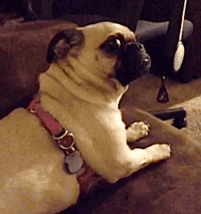
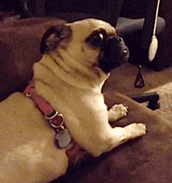

Fonética y español oral
Consonantes [ʝ] y [w]. Diptongos, semivocales y acento.
Joseph V. Casillas
Instituto Franklin: otoño 2015
Pruebita - Contesta las siguientes preguntas...
- En tus propias palabras, ¿qué es la fonética?
- ¿Qué es un dígrafo? Da un ejemplo.
- ¿Cuántos grafemas hay en el español?
- ¿Qué le recomendarías a un amigo para que mejorase su pronunciación de las vocales en español?
- La palabra "español" se silabifica es.pa.ñol y no e.spa.ñol. Explica por qué.
- Respuestas varían
- La combinación de dos grafemas que representa un sonido diferente (ej. "c" + "h").
- 27
- Vocales cortas y tensas.
- "sp" no es un grupo consonántico permitido en el arranque.
Una pista
Repaso
Repaso
Las sílabas
- ¿Qué es una sílaba? ¿De qué está compuesta?
- ¿Qué es un diptongo? ¿De qué está compuesto?
- ¿Qué es un hiato? ¿De qué está compuesto?
Las vocales
- ¿Cuáles son algunas de las características de las vocales del inglés? ¿Del español?
- ¿Qué le recomendarías a un amigo para que mejorase su pronunciación?
Repaso
Dividir por sílabas las siguientes palabras...
- casa
- calle
- hacha
- alto
- limpio
- anécdota
- España
- aplauso
Repaso
Dividir por sílabas las siguientes palabras...
- casa
- calle
- hacha
- alto
- limpio
- anécdota
- España
- aplauso
- Ahora transcribidlas...
- ca.sa
- ca.lle
- ha.cha
- al.to
- lim.pio
- a.néc.do.ta
- Es.pa.ña
- a.plau.so
Repaso
Dividir por sílabas las siguientes palabras...
| Palabra | Silabificación | Transcripción fonémica |
|---|---|---|
| casa | ca.sa | /ˈka.sa/ |
| calle | ca.lle | /ˈka.ʝe/ |
| hacha | ha.cha | /ˈa.ʧa/ |
| alto | al.to | /ˈal.to/ |
| limpio | lim.pio | /ˈlim.pi̯o/ |
| anécdota | a.néc.do.ta | /a.ˈnek.do.ta/ |
| España | Es.pa.ña | /es.ˈpa.ɲa/ |
| aplauso | a.plau.so | /a.ˈplau̯.so/ |
Correspondencia exclusiva
Correspondencia exclusiva
Correspondencia exclusiva: La relación entre el grafema y el fonema es 1:1.
- Es decir, el grafema es representado por un sólo fonema y el fonema es respresentado por un sólo grafema.
- Hay 9 casos de correspondencia exclusiva en español.
Correspondencia exclusiva
| Grafema/Dígrafo | Fonema | |
|---|---|---|
| "a" | /a/ | |
| "e" | /e/ | |
| "o" | /o/ | |
| "ch" | /ʧ/ | |
| "d" | /d/ | |
| "f" | /f/ | |
| "l" | /l/ | |
| "p" | /p/ | |
| "t" | /t/ |
Correspondencia exclusiva
| Grafema/Dígrafo | Fonema | ||
|---|---|---|---|
| "a" | ⟵-----------------------⟶ | /a/ | |
| "e" | ⟵-----------------------⟶ | /e/ | |
| "o" | ⟵-----------------------⟶ | /o/ | |
| "ch" | ⟵-----------------------⟶ | /ʧ/ | |
| "d" | ⟵-----------------------⟶ | /d/ | |
| "f" | ⟵-----------------------⟶ | /f/ | |
| "l" | ⟵-----------------------⟶ | /l/ | |
| "p" | ⟵-----------------------⟶ | /p/ | |
| "t" | ⟵-----------------------⟶ | /t/ |
Correspondencia exclusiva
- La correspondencia entre grafema/dígrafo y fonema no es exclusiva en todos los casos.
- Dicho de otra manera, no siempre es una relación de 1:1
- Ej. las 21 letras que quedan...
- ¿Qué problemas puede crear este hecho?
Correspondencia NO exclusiva
Correspondencia NO exclusiva
Ej.
- /k/: casa
- /s/ o /θ/: cien
Correspondencia NO exclusiva
Correspondencia NO exclusiva
Ej.
- cabe (inf. caber): /ˈka.be/
- cave (inf. cavar): /ˈka.be/
Resumen - Tipos de correspondencia
Tipos de correspondencia
- En grupos de dos o tres pensad en otros ejemplos de correspondencia NO exclusiva.
- Puede ser de un grafema/dígrafo a varios fonemas o de varios grafemas a un fonema.
- Ej.
- /k/ ⟶ "c", "k", "qu"
- "casa", "kilo", "que"
La letra "x"
La letra "x"
Decid las siguientes palabras
- examen
- éxito
- texto
- extra
- ¿Cuántos sonidos escucháis para la letra "x"?
- ¿Cuántos fonemas hay?
La letra "x"
- "x" ⟶ /ks/
- Son dos sonidos distintos
Según el contexto fónico, hay dos posibilidades:
- o bien los dos sonidos pueden formar una coda compleja (/ks/)
- o bien el sonido fricativo (/s/) puede ir en el arranque de la siguiente sílaba (/k.s/)
La letra "x"
- "x" ⟶ /ks/
- Son dos sonidos distintos
Según el contexto fónico, hay dos posibilidades:
- o bien los dos sonidos pueden formar una coda compleja (/ks/)
- o bien el sonido fricativo (/s/) puede ir en el arranque de la siguiente sílaba (/k.s/)
Transcribid las siguientes palabras...
| Otrografía | Transcripción |
|---|---|
| examen | |
| éxito | |
| texto | |
| extra |
La letra "x"
- "x" ⟶ /ks/
- Son dos sonidos distintos
Según el contexto fónico, hay dos posibilidades:
- o bien los dos sonidos pueden formar una coda compleja (/ks/)
- o bien el sonido fricativo (/s/) puede ir en el arranque de la siguiente sílaba (/k.s/)
Transcribid las siguientes palabras...
| Otrografía | Transcripción |
|---|---|
| examen | /ek.sá.men/ |
| éxito | /ék.si.to/ |
| texto | /téks.to/ |
| extra | /éks.tra/ |
Precalentamiento
Transcripción a la inversa
| Transcripción fonémica | Palabra |
|---|---|
| /ˈpa.xi.na/ | |
| /re.ko.ˈxeɾ/ | |
| /u.ˈma.no/ | |
| /xen.ˈtil/ | |
| /ˈθin.ko/ | |
| /ˈle.ʧe/ | |
| /ra.ˈton/ | |
| /o.ʧo.ˈθi̯en.tos/ | |
| /xa.po.ˈne.sa/ | |
| /ˈge.ra/ |
Transcripción a la inversa
| Transcripción fonémica | Palabra |
|---|---|
| /ˈpa.xi.na/ | "página" |
| /re.ko.ˈxeɾ/ | "recoger" |
| /u.ˈma.no/ | "humano" |
| /xen.ˈtil/ | "gentil" |
| /ˈθin.ko/ | "cinco" |
| /ˈle.ʧe/ | "leche" |
| /ra.ˈton/ | "ratón" |
| /o.ʧo.ˈθi̯en.tos/ | "ochocientos" |
| /xa.po.ˈne.sa/ | "japonesa" |
| /ˈge.ra/ | "guerra" |
Semivocales y vocales
Las semivocales (deslizadas)
[ i̯ ] - [ u̯ ]
- más breves que las vocales; se 'deslizan' hacia el sonido vocálico
- no pueden ir solas (sin una vocal que las acompañe)
- no pueden comenzar una sílaba
- no pueden llevar acento
Las vocales
[i] - [u] ...(y las demás)
- más largas que las semivocales (deslizadas)
- pueden ir solas
- pueden comenzar una sílaba
- pueden llevar acento
Semivocales y vocales
Representación ortográfica de las semivocales (letras)
[ i̯ ]
- "i" adiós ⟶ /a.ˈdi̯os/
- "y" hay ⟶ /ai̯/
[ u̯ ]
- "u" suave ⟶ /su̯a.be/
- "ü" lingüista ⟶ /lin.ˈgu̯is.ta/
[ʝ] y [w]
[ʝ] y [w]
- Son consonantes fricativas
- También se denominan "semiconsonantes"
- Están íntimamente relacionadas con las semivocales (/i̯ u̯/)
- Siempre van en el arranque
- Las semivocales (/i̯ u̯/) no pueden ir en el arranque
- Lo que tenemos en su lugar es [ʝ] y [w]
| Ortografía | Transcripción | ¡MAL! |
|---|---|---|
| hielo | [ʝé.lo] | *[i̯elo] |
| huerta | [wér.ta] | *[u̯erta] |
[ʝ] y [w]
También corresponden a las letras 'll', 'y' y 'w'
| Ortografía | Transcripción |
|---|---|
| llamar | /ʝa.ˈmar/ |
| payaso | /pa.ˈʝa.so/ |
| whisky | /ˈwis.ki/ |
[ʝ] y [w]
Se relacionan con las vocales [i] y [u] y con las semivocales [ i̯ ] y [ u̯ ]
- Semejanzas: articulación
- Diferencias:
| [ʝ] - [w]: | + fricción | + deslizamiento | - nucleares |
| [i̯] - [u̯]: | - fricción | + deslizamiento | - nucleares |
| [i] - [u]: | - fricción | - deslizamiento | + nucleares |
- Hay lingüistas que transcriben todos los diptongos con semiconsonantes
- "suave" ⟶ /ˈswa.be/ o /ˈsu̯a.be/
- "lingüista" ⟶ /lin.ˈgwis.ta/ o /lin.ˈgu̯is.ta/
[ʝ] y [w]
Recuerda: las semivocales son más breves que las vocales; las consonantes tienen fricción
| Sonido | Letra | Ejemplo | Transcripción fonémica |
|---|---|---|---|
| [ʝ] | "y" | yo | /ʝo] |
| "ll" | calle | /ˈka.ʝe/ | |
| "i" | hielo | /ˈʝe.lo/ | |
| [w] | "w'" | whisky | /ˈwis.ki/ |
| "u'" | huerta | /ˈweɾ.ta/ |
El acento
Acento prosódico vs. acento ortográfico
- Acento prosódico: La sílaba más fuerte (más pronunciada) de la palabra
- Acento ortográfico: La tilde escrita sobre una vocal para denotar el acento prosódico
No todas las palabras cuentan con un acento ortográfico (la tilde), pero sí TODAS tienen acento prosódico.
| Palabra | Transcripción fonémica |
|---|---|
| "casa" | /ˈka.sa/ |
| "móvil" | /ˈmo.bil/ |
El acento ortográfico
 

- Las palabras en español se denominan de manera diferente dependiendo de la sílaba en la que cae el acento primario de la palabra.
- agudas
- llanas
- esdrújulas
- sobreesdrújulas
El acento ortográfico
| Tipo de palabra | Descripción | Ejemplos |
|---|---|---|
| Agudas | Llevan el acento prosódico en la última sílaba | "fatal", "capaz" |
| Llanas | Llevan el acento prosódico en la penúltima sílaba | "casa", "hermano" |
| Esdrújulas | Llevan el acento prosódico en la antepenúlima sílaba | "sábana", "esdrújula" |
| Sobreesdrújulas | Llevan el acento prosódico antes de la antepenúltima sílaba | "dándoselo", "escríbemelo" |

Información general
- Todas las palabras esdrújulas y sobreesdrújulas llevan tilde (acento ortográfico) en la sílaba tónica... todas.
- Hay que aprender cuándo se tildan las agudas y las llanas
- La gran mayoría de las palabras en español son llanas
- La estructura silábica más común es CV.CV
Dos tendencias generales
Las palabras que terminan en vocal, "n" o "s" suelen ser llanas
- Ej. comen, casas, boca, hacen, buscamos...
Las palabras que terminan en consonante (excepto “n” o “s”) suelen ser agudas
- Ej. fatal, total, hacer, feliz, perfil...
Las palabras que respetan esta tendencia del español NO llevan acento gráfico/escrito.
Regla para la acentuación
REGLA UNIVERSAL
- Las palabras llanas y agudas que no siguen la tendencia general llevan una tilde en la vocal tónica de la palabra.
A practicar
Explicad por qué las siguientes palabras requieren o no una tilde...
| Transcripción fonémica | Palabra | Explicación |
|---|---|---|
| /a.ˈo.ɾa/ | ||
| /ˈbes.tia/ | ||
| /es.ˈdru.xu.la/ | ||
| /ˈpru̯e.ba/ | ||
| /ka.ˈfe/ |
A practicar
Explicad por qué las siguientes palabras requieren o no una tilde...
| Transcripción fonémica | Palabra | Explicación |
|---|---|---|
| /a.ˈo.ɾa/ | "ahora" | No, porque es llana y termina en vocal |
| /ˈbes.tia/ | "bestia" | No, porque es llana y termina en vocal |
| /es.ˈdru.xu.la/ | "esdrújula" | Sí, porque es esdrújula |
| /ˈpru̯e.ba/ | "prueba" | No, porque es llana y termina en vocal |
| /ka.ˈfe/ | "café" | Sí, porque es aguda y termina en vocal |
El antidiptongo
Considerad las siguientes palabras
- prohíbo
- día
- oír
- Raúl
- continúa
- leíste
- tenía
Las palabras monosilábicas
- Las palabras monosilábicas en español no llevan tilde, excepto en los casos de homonimia
- La tilde sirve para diferenciar entre homónimos, palabras ortográficamente idénticas pero con significado diferente
Ej.
- de/dé
- mi/mí
- si/sí
- tu/tú
- mas/más...
¡Ya está! Ahora sabes poner bien las tildes

Repaso
Lo que hemos visto...
- la lingüística y las distintas ramas
- grafema/dígrafo vs. fonema
- la sílaba
- composición (ataque, núcleo, coda)
- grupos consonánticos
- monoptongos
- diptongos (3 tipos)
- hiatos
- diferencias entre el inglés y el español (vocales)
- correspondencia absoluta/exclusiva
- semivocales/semiconsonantes
- el grafema "x"
- los fonemas [ʝ] y [w]
- el acento ortográfico
- el acento prosódico
Tarea
- Para entregar (el martes), hoja impresa